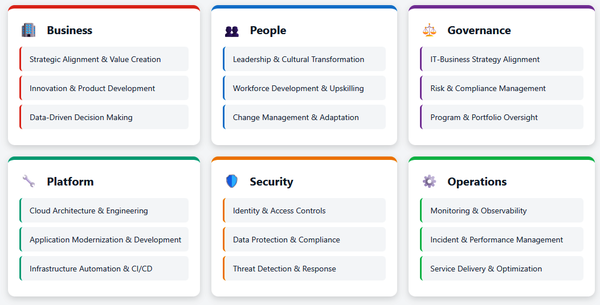

Cloud computing has fundamentally transformed the way organizations manage IT resources. Instead of investing heavily in physical infrastructure, businesses are now turning to cloud platforms like AWS to gain flexibility, reduce costs, and accelerate innovation.
This chapter provides a comprehensive overview of the fundamentals of AWS, starting with a comparison between traditional on-premises setups and cloud-based environments. We’ll then go on to look at the key financial concepts like the total cost of ownership (TCO), examine licensing strategies, and dive into cloud native benefits like rightsizing, automation, and scalability. The chapter also introduces important frameworks like the AWS Well-Architected Framework and the AWS Cloud Adoption Framework. They provide practical guidance for designing secure, resilient, and cost-effective cloud solutions.
One of the cloud’s most powerful advantages isn’t technical at all—it’s economic. Cloud economics has reshaped how organizations think about IT spending, shifting the conversation from servers and data centers to flexibility, speed, and financial agility. Understanding how cloud costs work, and how they differ from traditional infrastructure investments, is key to making smart decisions in the cloud.
In the next few sections, we’ll unpack some of the main benefits and features that drive cloud economics.
When you’re weighing IT infrastructure options, the cost differences between running operations on-premises and moving to the cloud can be eye-opening. One of the key metrics that helps make sense of this is the TCO. This isn’t just about the price tag on a server. Instead, it wraps in everything, such as purchase costs, operating expenses, ongoing maintenance, and the people who keep it all running.
Going the on-premises route often means you’re footing a sizable bill. Here’s a breakdown of where the money goes:
Entry-level servers might cost you around $1,000 to $2,500, but once you step into enterprise-grade gear, you’re easily looking at $10,000 or more per server.
High-capacity, high-performance enterprise storage solutions can set you back upwards of $50,000.
Routers, switches, firewalls—especially the kind that scale well and don’t compromise on security—can push your networking spend past $50,000.
Operating systems, virtualization platforms, and middleware licenses can easily add up. Annual costs can exceed $5,000, depending on what you’re running.
Whether you build or lease, data center costs don’t come cheap. Factor in power, cooling, and physical security, and you’re looking at over $1,000 per square foot.
Skilled IT personnel are essential, and salaries often hit six figures. This is before you even factor in patching, updates, or support contracts.
These costs are a big reason why so many companies are migrating to the cloud. With lower upfront expenses, predictable monthly fees, and the ability to scale up (or down) as needed, cloud services offer a level of financial flexibility that traditional infrastructure often can’t match.
Capital expenditure (CapEx) generally refers to on-premises investments—spending up front to acquire physical assets like buildings, data centers, servers, and perpetual software licenses. These are long-term purchases you expect to keep and use over multiple years. While the initial cost can be large, the benefit is greater control. But you must forecast your needs years in advance, which is challenging if usage drops or surges unexpectedly.
Operating expenditure (OpEx), by contrast, includes operational costs that arise from day-to-day usage of services like compute, storage, SaaS subscriptions, and managed offerings. With cloud services, you pay as you go—typically monthly, quarterly, or annually—with little or no upfront cost. This pay-as-you-use model offers flexibility and lets your spending scale with demand.
Dividing expenses into CapEx and OpEx is common in the IT industry. It’s a way to get a sense of the financial impact. These two terms also often show up on exam questions.
When you’re deploying software on AWS, one of the first things to figure out is how you’ll handle licensing. You’ve got two main paths: you can use the Bring Your Own License (BYOL) experience or use AWS’s included licenses. Each has its pros, cons, and gotchas. Choosing the right model can save you money, reduce headaches, or both.
If your organization already holds software licenses—such as Windows Server, SQL Server, or Oracle—BYOL on AWS offers a way to reduce costs and maintain compliance. For workloads that tie licensing to physical hardware (like older Windows or SQL Server core/socket-based licenses), deploying on Amazon EC2 Dedicated Hosts preserves the physical core and socket visibility required by licensing terms. This alignment can yield up to 50% savings.
Alternatively, if your Microsoft licenses are covered by active Software Assurance (SA), you can use License Mobility to shift eligible products—like SQL Server, Exchange, or SharePoint—to shared‑tenancy EC2 instances. This approach avoids the need for Dedicated Hosts, streamlines deployment, and still lets you use existing licenses, provided you complete the required Microsoft verification.
To use this service, you must submit Microsoft’s License Mobility Verification Form and receive approval before deploying workloads.
In both scenarios, the responsibility for license tracking and compliance remains with you, even though AWS offers tools like AWS License Manager to help. Ultimately, BYOL gives you the flexibility to reuse existing investments while reducing AWS spend, as long as you align infrastructure and licensing correctly.
The AWS License Included model uses the pay-as-you-go system to wrap the software licensing costs into the hourly price of the instance. You spin it up, use the software, and AWS takes care of the licensing details.
Using AWS-included licenses instead of your own is especially useful if you want flexibility. Need to scale up fast or experiment without wrestling with licensing paperwork? This model does particularly well here. For example, Amazon RDS for Oracle lets you skip the Oracle license purchase entirely. AWS supplies it as part of the package.
The trade-off, though, is cost. If you’re running a workload for the long haul, it might end up being more expensive to use bundled licenses than to reuse licenses you already own. So while it’s simpler, that simplicity can come with a price tag.
Determining which approach to use comes down to your situation.
If your company already owns licenses and your workloads are stable or predictable, BYOL might make more financial sense. You get to stretch your existing investments further. But if you’re prioritizing agility, want to avoid compliance overhead, or need to move fast, the AWS License Included model could be the better fit, even if it costs a little more over time.
Whichever path you choose, tools like AWS License Manager can help you stay organized. It tracks what you’re using and where, helping you stay compliant and avoid unexpected costs down the line.
In AWS, rightsizing means fine-tuning your cloud resources—especially EC2 and RDS instances—so that they match what your workloads need. It’s about having enough capacity to keep things running smoothly, but not having so many resources that you’re paying for unused horsepower.
To achieve the right balance, you’ll need to dig into usage data. Look for instances that are overprovisioned (too much CPU allocation or memory sitting idle) or underprovisioned (just barely handling the load). Once you spot the outliers, you can adjust instance types or sizes to better fit the actual demand.
This isn’t a one-and-done task. Workloads evolve, and what fits today might be oversized next quarter. This is why it works best to adopt rightsizing as an ongoing routine. Tools like AWS Compute Optimizer and Cost Explorer make this easier by offering data-driven recommendations based on how your infrastructure has behaved over time.
When done right, rightsizing can unlock major savings. By reviewing usage trends—typically over a 14- to 93-day window—you can spot opportunities to scale down, consolidate, or shift workloads without hurting performance. It also pairs nicely with long-term pricing strategies like Reserved Instances or Savings Plans, helping you reserve only what you truly need.
Automation takes the grunt work out of repetitive tasks like provisioning servers, managing configurations, and applying patches. For example, AWS Systems Manager Automation lets you build runbooks—basically, reusable workflows—that handle routine maintenance or deployment jobs across services like EC2 and RDS. This frees up your team to focus on higher-level strategy instead of constantly putting out fires.
Importantly, AWS makes this easy because its services are automation tools themselves. AWS Systems Manager is an automation engine, Auto Scaling automates resource scaling based on demand, and Compute Optimizer automates cost‑saving insights. Having the platform itself centered around automation reduces manual toil and ensures consistency.
When your application needs to handle unpredictable traffic, automation has your back there too. Services like Elastic Beanstalk and AWS Lambda automatically scale your application based on demand, so you don’t have to scramble to spin up more servers during a spike.
Security and compliance also get a boost. Automated tools like AWS Config and CloudTrail keep an eye on your environment by tracking resource changes and logging user activity. This kind of visibility makes it easier to stay compliant and respond quickly if something goes sideways.
With the right automation in place, you can move faster, spend less, and build cloud systems that practically run themselves.
By pooling the demands of hundreds of thousands of customers, AWS can buy hardware and software in massive quantities. This scale drives down costs, and AWS passes those savings along to its users.
AWS also squeezes maximum efficiency out of its global infrastructure. It spreads costs across a huge customer base, which lowers the per-user price of services like storage and compute.
Its worldwide network of data centers and availability zones adds another layer of value. AWS can route workloads intelligently, balance performance, and maintain high availability—all while keeping operations cost-effective.
AWS’s ongoing investments in innovation and infrastructure help drive costs even lower over time. As the platform evolves, customers continue to benefit from better performance, richer features, agility, and reduced pricing.
The AWS Well-Architected Framework serves as a guide, offering a structured approach of design principles, best practices, and tools. However, it doesn’t automatically configure or optimize your workloads. Instead, it helps your team critically assess your architecture, uncover risks, and determine what needs to be done in areas like performance, security, cost, and resilience. Armed with this guidance, you’re responsible for executing the necessary steps—such as tagging resources, conducting load tests, enabling auto‑scaling, applying cost‑optimization strategies, and implementing security controls—in order to steadily improve your systems over time.
The framework is built around six key pillars:
Operational excellence is about keeping systems healthy and adapting quickly when things change—which they always seem to do. In AWS, this means treating operations like code. You automate what you can, track what matters, and build feedback loops into your workflow.
To avoid surprises, you can run controlled failure drills, often called game days. You’ll learn how your team and systems respond under pressure. This will help you identify where you need to focus to make your organization more resilient. The goal of these exercises isn’t to overhaul the whole system, but to identify areas for improvement and make small, reversible changes. This is an ongoing process; you’ll keep learning as you go.
Security should be a continuous practice. For this, AWS follows a Shared Responsibility Model. AWS secures the cloud infrastructure, but you’re in charge of securing your data and workloads. This includes managing who can access what and when, encrypting everything important, and setting up systems to alert you when something goes sideways. Tools like AWS Config and CloudTrail can help, but regular risk reviews and staying on top of compliance are just as important. The more you automate your defenses, the faster you can respond.
Reliability means your system holds up, even when something breaks. AWS gives you tools to build for failure: spread workloads across availability zones, automate recovery, and make sure your monitoring practices provide useful information, rather than just noise. You should also test your backups and failover processes often. Use infrastructure as code to keep deployments consistent, and design for horizontal scaling so that you’re ready when demand spikes.
Resilient systems aren’t an accident—they’re planned that way.
Performance efficiency means meeting or exceeding your performance goals using the most appropriate cloud resources and evolving alongside those goals over time. It starts by making smart architecture choices—selecting the right compute (serverless, containers, or instances), storage, database, and networking solutions—matched to your workload’s behavior. You should embrace design principles like using serverless architectures to remove infrastructure management and experimenting often to tune performance. After implementation, monitor key performance metrics, set up alarms, and run load tests under pressure to validate and optimize. When patterns shift, employ auto-scaling to adjust capacity and rightsize resources based on real-world data.
In essence, performance efficiency is an ongoing cycle: choose wisely, observe closely, and adjust continuously.
Cost optimization helps you get the most value from AWS without overspending. Tag your resources, track usage patterns, and take advantage of pricing models like Spot Instances or reserved capacity. Budgeting tools can catch runaway costs early, and managed services can offload some of the operational burden.
A focus on sustainability pushes teams to go beyond performance and cost—centering on the environmental impact of their cloud workloads. The AWS Well-Architected Framework supports this by offering guidance to help reduce idle resources, optimize energy use, choose efficient regions, and minimize unnecessary data transfer.
Table 4-1 shows a summary of the AWS Well-Architected Framework.
| Pillar | What this pillar provides |
|---|---|
|
Operational excellence |
|
|
Security |
|
|
Reliability |
|
|
Performance efficiency |
|
|
Cost optimization |
|
|
Sustainability |
The AWS Cloud Adoption Framework (CAF) is Amazon’s comprehensive guide for organizations that have committed to AWS and are ready to move beyond on-premises infrastructure. While the Well-Architected Framework focuses on the technical design and optimization of specific workloads, the CAF takes a broader view. It helps you assess and build the strategic, organizational, and operational capabilities needed for a successful cloud transformation.
The CAF is typically used before or alongside the Well-Architected Framework. It helps you answer questions like: “Are we ready—organizationally, technically, and culturally—to adopt AWS at scale?” Once those foundations are in place, the CAF comes into play to assess, refine, and optimize the design of your actual workloads.
The CAF is organized around six key perspectives: business, people, governance, platform, security, and operations. These help you align cloud adoption with business goals, develop governance and training plans, set up foundational cloud environments, and prepare your organization for long-term operations.
The business perspective helps ensure your cloud investments support your broader business goals. This is focused on evaluating your cloud strategy, prioritizing investments, and defining key business outcomes. Decision makers—like the CEO, CFO, CIO, or CTO—will find this perspective especially valuable, as it aligns cloud initiatives with financial objectives, strategy, and innovation efforts.
Rather than focusing on infrastructure, this perspective centers on what the cloud can enable: accelerating digital transformation, justifying investment through measurable benefits, assessing the right things to move, and shaping new value propositions. This helps guide leadership in defining the “why” before diving into “how.”
This perspective focuses on how teams are organized, how leadership works, and how you support your workforce as roles and responsibilities evolve.
You’ll look at things like upskilling, leadership development, and change management. If you’re in HR, talent development, or managing cross-functional teams, this one’s in your lane. The goal is to foster a culture that’s ready to learn and adapt.
The governance perspective guides organizations in aligning cloud strategy with business objectives while managing risk and compliance. It helps you define the skills, processes, and control mechanisms needed to run cloud programs responsibly. Stakeholders like the CIO, enterprise architects, program/product managers, analysts, and portfolio owners use this perspective to learn how to shape governance structures, update organizational processes, and enable oversight.
In practice, companies give relevant team members access to the governance perspective to understand and assess existing gaps. They then use this insight to design governance functions, such as program management, benefits and risk management, financial oversight, application portfolio reviews, and data governance. Once the “what and why” are understood, the company assigns specific roles to carry out these governance actions.
This is where the technology takes center stage. The platform perspective provides guidance on how to design, build, and run your cloud systems. This includes modernizing old workloads, creating cloud native apps, and setting up continuous integration and delivery pipelines.
If you’re a solutions architect, engineer, or IT manager, this is familiar territory. It’s about building something that lasts and scales with your needs.
The security perspective is where organizations learn how to embed protection across their cloud environments. The focus is on confidentiality, integrity, and availability of data and workloads. It outlines nine foundational security capabilities—such as IAM, threat detection, and incident response—that security professionals must address.
For someone studying the framework, the key takeaway is this: these capabilities are intended for practitioners responsible for cloud security, especially CISOs, security architects, compliance officers, and internal audit teams.
Operations is where strategy becomes reality. This perspective is about how you monitor, manage, and maintain your cloud services day to day. It includes your operating model, incident response strategy, and disaster recovery planning.
The key stakeholders here are IT operations leads, DevOps teams, and support managers. It’s not the flashiest area, but it’s the one that keeps everything humming behind the scenes.
Figure 4-1 shows a summary of the perspectives.

Moving to the cloud is a strategic shift that can unlock better scalability, flexibility, and long-term cost savings. But getting there takes a lot of planning. AWS provides a practical toolkit known as the six migration strategies, commonly referred to as the 6 Rs.
Each of the six strategies offers a different path to the cloud. There’s no one-size-fits-all solution, and that’s the point. By understanding what each option offers, you can build a smart migration plan.
Let’s break them down:
Rehosting is the “lift and shift” move. You take your application as-is and drop it into the cloud, no code changes required. It’s fast and relatively simple. It is for when you need to get out of a data center quickly or migrate a large batch of systems. The trade-off, though, is you won’t get the full benefit of cloud native tools, and you may bring along some of your old inefficiencies. Still, for many, it’s a solid first step.
Replatforming means you tweak your application just enough to make it work better in the cloud, but without overhauling the whole system. Maybe you swap out a self-hosted database for a managed service like Amazon RDS. It’s more work than rehosting but gives you a smoother, more cloud-friendly experience without a full rewrite. It is modernization without some of the challenges of a full rebuild.
Refactoring or re-architecting goes deep. You redesign and rebuild the app to take full advantage of cloud native capabilities, such as microservices, serverless functions, or scalable, distributed databases. This approach takes time and resources. But if your current architecture is holding you back—or if you’re trying to innovate faster—it’s often worth the investment.
Repurchasing means swapping your old application for a new, cloud native one—usually a SaaS product. For example, instead of hosting your own CRM, you move to something like Salesforce. You don’t migrate the application—you replace it. But this usually requires reworking internal processes or retraining teams.
Sometimes the best move is… no move. At least for now. Maybe the application just got an upgrade, has regulatory constraints, or depends on systems that aren’t cloud-ready. In these cases, you hit pause. You keep the application on-premises while you work on migrating everything else. Retaining lets you focus on what’s ready now without derailing the bigger plan.
Every organization has applications that no one really uses anymore. Maybe they served a purpose once, but now they’re dead weight. Retiring those systems frees up time, budget, and mental space. It’s often a great place to start your migration journey because it helps you clean house before moving forward.
Choosing the right strategy for each app means asking the right questions: How complex is it? How critical is it to the business? What kind of resources do you have to work with? The answers will point you toward the most effective approach.
The AWS Snow Family is a set of physical, rugged devices designed to help customers move large amounts of data to and from AWS when internet connections are slow, expensive, or unreliable. These devices are commonly used in remote locations, in disconnected environments, during large migrations, or where data volumes are so large that transferring over the network would take too long or cost too much.
There are three main Snow device categories you need to know for the exam: Snowcone, Snowball, and Snowmobile. Snowcone is the smallest and most portable option—used for small edge use cases, IoT deployments, and limited-power/limited-space situations (like vehicles, ships, job sites, field sensors). Snowball is used for large-scale data transfer (tens of terabytes to petabytes) and can also support edge compute workloads depending on the model. Snowmobile is literally a tractor-trailer that can transfer exabyte-scale data for massive migrations.
However, AWS is de-emphasizing Snowball going forward. New orders will only be available to existing customers after November 2025. However, Snow Family knowledge is still testable because the exam objective is concept reasoning: if bandwidth is limited, or you need petabyte-scale offline transfer—choose Snow.
In this chapter, we learned how AWS transforms traditional IT practices by offering a flexible, scalable, and cost-effective alternative to on-premises infrastructure. We looked at the economic advantages of cloud computing, including the shift from capital expenditures to operating expenditures, and examined critical financial strategies like rightsizing and licensing models such as BYOL and the AWS License Included model.
We also introduced foundational frameworks such as the AWS Well-Architected Framework and the AWS Cloud Adoption Framework, which help organizations build reliable, secure, and efficient cloud environments while navigating cultural, operational, and technical shifts.
In the next chapter, we’ll look at cloud governance and compliance with the AWS platform.
To check your answers, please refer to the “Chapter 4 Answer Key”.
What is one major financial advantage of moving from on-premises infrastructure to the cloud?
Increased hardware investments
Higher initial capital costs
Longer depreciation timelines
Lower total cost of ownership (TCO)
Which of the following is not one of the 6 Rs of cloud migration?
Rehost
Repackage
Replatform
Refactor
What is the purpose of the sustainability pillar in the Well-Architected Framework?
Enforce legal compliance
Reduce environmental impact
Increase profit margins
Boost staff productivity
Which Cloud Adoption Framework (CAF) perspective focuses on aligning IT with business goals and financial accountability?
Platform
Governance
Security
People
What’s a key benefit of using the repurchase migration strategy?
Retains all legacy customizations
Eliminates compliance needs
Keeps infrastructure on-premises
Replaces legacy apps with software as a service (SaaS)